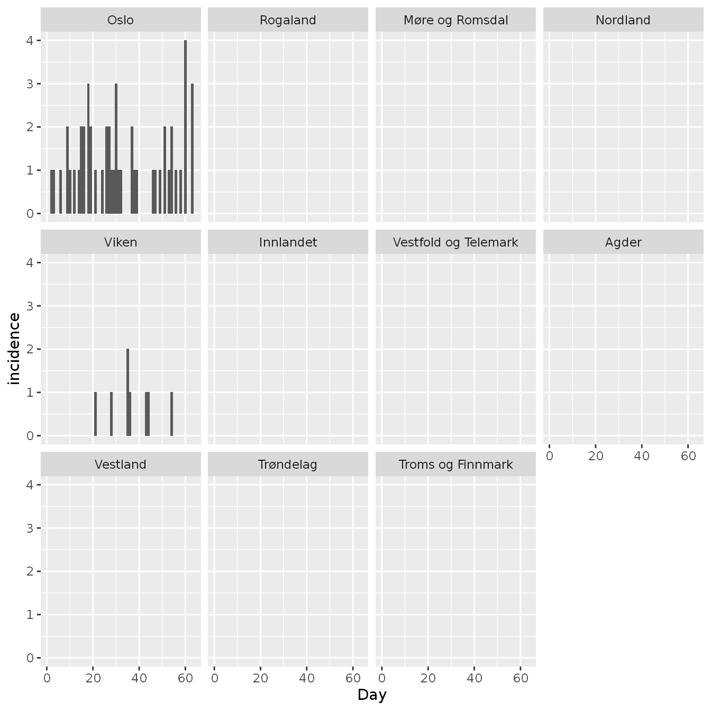

commuter_model.RmdThis model is a stochastic SEIIaR (susceptible, exposed, infectious, infectious asymptomatic, recovered) metapopulation model. Each location has a local infection system, while the locations are connected by people who commute each day. The model differentiates between day and night. During the day you can infect/be infected in the location where you work, while during the night you can infect/be infected in the location where you live. It is the same commuters who travel back and forth each day. At the start of a day, all commuters are sent to their work location, where they mix for 12 hours. The commuters are then sent to their respective home locations, where they mix for 12 hours. The model is loosely based upon a published model by Engebretsen (2019).
seiiar is a dataset that contains the following variables for the entire population you want to model:
location_code a code for each locationS the starting value of susceptible peopleE the starting value of exposed peopleI the starting value of infectious and symptomatic peopleIa the starting value of infectious and asymptomatic peopleR the starting value of recovered people# no one in Norway is infected, and everyone is susceptible spread::norway_seiiar_noinfected_2017_b2020 #> location_code S E I Ia R #> 1: municip0301 666759 0 0 0 0 #> 2: municip1101 14899 0 0 0 0 #> 3: municip1103 140856 0 0 0 0 #> 4: municip1106 37166 0 0 0 0 #> 5: municip1108 76742 0 0 0 0 #> --- #> 352: municip5440 991 0 0 0 0 #> 353: municip5441 2911 0 0 0 0 #> 354: municip5442 951 0 0 0 0 #> 355: municip5443 2267 0 0 0 0 #> 356: municip5444 10199 0 0 0 0 # 10 people in Oslo are infected, and everyone is susceptible spread::norway_seiiar_oslo_2017_b2020 #> location_code S E I Ia R #> 1: municip0301 666749 0 10 0 0 #> 2: municip1101 14899 0 0 0 0 #> 3: municip1103 140856 0 0 0 0 #> 4: municip1106 37166 0 0 0 0 #> 5: municip1108 76742 0 0 0 0 #> --- #> 352: municip5440 991 0 0 0 0 #> 353: municip5441 2911 0 0 0 0 #> 354: municip5442 951 0 0 0 0 #> 355: municip5443 2267 0 0 0 0 #> 356: municip5444 10199 0 0 0 0 # no one in Norway is infected, and childhood vaccination data is used to # estimate the number of "recovered" (i.e. non-susceptible) people for measles spread::norway_seiiar_measles_noinfected_2017_b2020 #> location_code S E I Ia R #> 1: municip0301 59775 0 0 0 606984 #> 2: municip1101 1027 0 0 0 13872 #> 3: municip1103 8868 0 0 0 131988 #> 4: municip1106 1557 0 0 0 35609 #> 5: municip1108 3058 0 0 0 73684 #> --- #> 352: municip5440 56 0 0 0 935 #> 353: municip5441 513 0 0 0 2398 #> 354: municip5442 72 0 0 0 879 #> 355: municip5443 150 0 0 0 2117 #> 356: municip5444 1149 0 0 0 9050 # 10 people in Oslo is infected, and childhood vaccination data is used to # estimate the number of "recovered" (i.e. non-susceptible) people for measles spread::norway_seiiar_measles_oslo_2017_b2020 #> location_code S E I Ia R #> 1: municip0301 59765 0 10 0 606984 #> 2: municip1101 1027 0 0 0 13872 #> 3: municip1103 8868 0 0 0 131988 #> 4: municip1106 1557 0 0 0 35609 #> 5: municip1108 3058 0 0 0 73684 #> --- #> 352: municip5440 56 0 0 0 935 #> 353: municip5441 513 0 0 0 2398 #> 354: municip5442 72 0 0 0 879 #> 355: municip5443 150 0 0 0 2117 #> 356: municip5444 1149 0 0 0 9050 # we can take a closer look at Oslo spread::norway_seiiar_measles_oslo_2017_b2020[location_code=="municip0301"] #> location_code S E I Ia R #> 1: municip0301 59765 0 10 0 606984
commuters is a dataset that contains the following variables:
from location code for the location where the people liveto location code for the location where the people workn the number of people this applies to# we provide the number of municipal commuters in Norway in 2017 spread::norway_commuters_2017_b2020 #> from to n #> 1: municip0301 municip1101 71 #> 2: municip0301 municip1103 1423 #> 3: municip0301 municip1106 332 #> 4: municip0301 municip1108 652 #> 5: municip0301 municip1111 5 #> --- #> 23948: municip5444 municip5439 3 #> 23949: municip5444 municip5440 1 #> 23950: municip5444 municip5441 33 #> 23951: municip5444 municip5442 12 #> 23952: municip5444 municip5443 8
r0 is the basic reproductive number.
latent_period is the average number of days from when a person is exposed until they are infectious.
asymptomatic_prob is the probability that an infectious person is asymptomatic.
asymptomatic_relative_infectiousness is the relative infectiousness of an asymptomatic infectious person when compared to a symptomatic infectious person. This value is between 0 and 1.
days_simulation the number of days you want to simulate.
N this is the number of simulations that will be run and then the results will be averaged. This should generally be set to 1, unless you are performing model fitting.
We simulate one measles outbreak using the datasets spread::norway_seiiar_measles_oslo_2017_b2020 and spread::norway_commuters_2017_b2020:
set.seed(4) d <- spread::commuter( seiiar=spread::norway_seiiar_measles_oslo_2017_b2020, commuters=spread::norway_commuters_2017_b2020, r0=14, latent_period = 8, infectious_period = 5, asymptomatic_prob=0, asymptomatic_relative_infectiousness=0, days_simulation=7*9, N=1 ) #> Starting to add edges, printing every 1000 edge #> 1000 2000 3000 4000 5000 6000 7000 8000 9000 10000 11000 12000 13000 14000 15000 16000 17000 18000 19000 20000 21000 22000 23000 Found 23894 edges #> Running 1 simulations of 63 days #> #> #> Finished all simulations
Inspecting the data from Oslo:
d[location_code=="municip0301"] #> sim_id location_code week day is_6pm S E I Ia R incidence pop #> 1: 1 municip0301 1 1 TRUE 59764 2 9 0 606985 0 666760 #> 2: 1 municip0301 1 2 TRUE 59761 4 7 0 606988 1 666760 #> 3: 1 municip0301 1 3 TRUE 59760 4 5 0 606991 1 666760 #> 4: 1 municip0301 1 4 TRUE 59759 5 4 0 606992 0 666760 #> 5: 1 municip0301 1 5 TRUE 59759 5 2 0 606994 0 666760 #> 6: 1 municip0301 1 6 TRUE 59758 5 2 0 606995 1 666760 #> 7: 1 municip0301 1 7 TRUE 59756 7 2 0 606995 0 666760 #> 8: 1 municip0301 2 8 TRUE 59755 8 2 0 606995 0 666760 #> 9: 1 municip0301 2 9 TRUE 59755 6 4 0 606995 2 666760 #> 10: 1 municip0301 2 10 TRUE 59754 6 4 0 606996 1 666760 #> 11: 1 municip0301 2 11 TRUE 59754 6 3 0 606997 0 666760 #> 12: 1 municip0301 2 12 TRUE 59754 5 3 0 606998 1 666760 #> 13: 1 municip0301 2 13 TRUE 59752 7 3 0 606998 0 666760 #> 14: 1 municip0301 2 14 TRUE 59752 6 4 0 606998 1 666760 #> 15: 1 municip0301 3 15 TRUE 59752 4 6 0 606998 2 666760 #> 16: 1 municip0301 3 16 TRUE 59749 5 8 0 606998 2 666760 #> 17: 1 municip0301 3 17 TRUE 59746 8 7 0 606999 0 666760 #> 18: 1 municip0301 3 18 TRUE 59745 6 9 0 607000 3 666760 #> 19: 1 municip0301 3 19 TRUE 59743 6 9 0 607002 2 666760 #> 20: 1 municip0301 3 20 TRUE 59743 6 7 0 607004 0 666760 #> 21: 1 municip0301 3 21 TRUE 59743 4 5 0 607008 1 666760 #> 22: 1 municip0301 4 22 TRUE 59742 5 4 0 607009 0 666760 #> 23: 1 municip0301 4 23 TRUE 59741 6 3 0 607010 0 666760 #> 24: 1 municip0301 4 24 TRUE 59739 7 4 0 607010 1 666760 #> 25: 1 municip0301 4 25 TRUE 59739 7 3 0 607011 0 666760 #> 26: 1 municip0301 4 26 TRUE 59738 6 4 0 607012 2 666760 #> 27: 1 municip0301 4 27 TRUE 59738 4 5 0 607013 2 666760 #> 28: 1 municip0301 4 28 TRUE 59737 4 5 0 607014 1 666760 #> 29: 1 municip0301 5 29 TRUE 59736 5 5 0 607014 1 666760 #> 30: 1 municip0301 5 30 TRUE 59734 4 6 0 607016 3 666760 #> 31: 1 municip0301 5 31 TRUE 59732 5 7 0 607016 1 666760 #> 32: 1 municip0301 5 32 TRUE 59732 4 7 0 607017 1 666760 #> 33: 1 municip0301 5 33 TRUE 59732 4 6 0 607018 0 666760 #> 34: 1 municip0301 5 34 TRUE 59731 5 6 0 607018 0 666760 #> 35: 1 municip0301 5 35 TRUE 59731 5 5 0 607019 0 666760 #> 36: 1 municip0301 6 36 TRUE 59729 7 4 0 607020 0 666760 #> 37: 1 municip0301 6 37 TRUE 59729 5 5 0 607021 2 666760 #> 38: 1 municip0301 6 38 TRUE 59727 6 5 0 607022 1 666760 #> 39: 1 municip0301 6 39 TRUE 59727 5 5 0 607023 1 666760 #> 40: 1 municip0301 6 40 TRUE 59725 7 4 0 607024 0 666760 #> 41: 1 municip0301 6 41 TRUE 59725 7 3 0 607025 0 666760 #> 42: 1 municip0301 6 42 TRUE 59725 7 2 0 607026 0 666760 #> 43: 1 municip0301 7 43 TRUE 59724 7 3 0 607026 0 666760 #> 44: 1 municip0301 7 44 TRUE 59722 9 3 0 607026 0 666760 #> 45: 1 municip0301 7 45 TRUE 59721 10 3 0 607026 0 666760 #> 46: 1 municip0301 7 46 TRUE 59721 9 3 0 607027 1 666760 #> 47: 1 municip0301 7 47 TRUE 59720 9 4 0 607027 1 666760 #> 48: 1 municip0301 7 48 TRUE 59720 9 3 0 607028 0 666760 #> 49: 1 municip0301 7 49 TRUE 59718 10 4 0 607028 1 666760 #> 50: 1 municip0301 8 50 TRUE 59717 11 4 0 607028 0 666760 #> 51: 1 municip0301 8 51 TRUE 59717 9 6 0 607028 2 666760 #> 52: 1 municip0301 8 52 TRUE 59716 10 5 0 607029 0 666760 #> 53: 1 municip0301 8 53 TRUE 59716 9 5 0 607030 1 666760 #> 54: 1 municip0301 8 54 TRUE 59715 7 7 0 607031 2 666760 #> 55: 1 municip0301 8 55 TRUE 59714 8 6 0 607032 0 666760 #> 56: 1 municip0301 8 56 TRUE 59712 9 5 0 607034 1 666760 #> 57: 1 municip0301 9 57 TRUE 59711 10 3 0 607036 0 666760 #> 58: 1 municip0301 9 58 TRUE 59710 10 4 0 607036 1 666760 #> 59: 1 municip0301 9 59 TRUE 59707 13 4 0 607036 0 666760 #> 60: 1 municip0301 9 60 TRUE 59706 11 6 0 607037 4 666760 #> 61: 1 municip0301 9 61 TRUE 59705 12 6 0 607037 0 666760 #> 62: 1 municip0301 9 62 TRUE 59703 14 5 0 607038 0 666760 #> 63: 1 municip0301 9 63 TRUE 59701 13 7 0 607039 3 666760 #> sim_id location_code week day is_6pm S E I Ia R incidence pop
We can merge in information about counties, and create county level data:
d <- merge(d,fhidata::norway_locations_b2020, by.x="location_code",by.y="municip_code") county <- d[,.( S=sum(S), E=sum(E), I=sum(I), Ia=sum(Ia), R=sum(R), incidence=sum(incidence), pop=sum(pop) ), keyby=.(county_code,county_name,week,day,is_6pm)] county[,county_name:=factor(county_name,levels=unique(fhidata::norway_locations_b2020[,c("county_code","county_name")]$county_name))] county #> county_code county_name week day is_6pm S E I Ia R #> 1: county03 Oslo 1 1 TRUE 59764 2 9 0 606985 #> 2: county03 Oslo 1 2 TRUE 59761 4 7 0 606988 #> 3: county03 Oslo 1 3 TRUE 59760 4 5 0 606991 #> 4: county03 Oslo 1 4 TRUE 59759 5 4 0 606992 #> 5: county03 Oslo 1 5 TRUE 59759 5 2 0 606994 #> --- #> 689: county54 Troms og Finnmark 9 59 TRUE 22632 0 0 0 220397 #> 690: county54 Troms og Finnmark 9 60 TRUE 22632 0 0 0 220397 #> 691: county54 Troms og Finnmark 9 61 TRUE 22632 0 0 0 220397 #> 692: county54 Troms og Finnmark 9 62 TRUE 22632 0 0 0 220397 #> 693: county54 Troms og Finnmark 9 63 TRUE 22632 0 0 0 220397 #> incidence pop #> 1: 0 666760 #> 2: 1 666760 #> 3: 1 666760 #> 4: 0 666760 #> 5: 0 666760 #> --- #> 689: 0 243029 #> 690: 0 243029 #> 691: 0 243029 #> 692: 0 243029 #> 693: 0 243029
We can produce a daily epicurve for each county:
p <- ggplot(county, aes(x=day, y=incidence)) p <- p + geom_col() p <- p + facet_wrap(~county_name) p <- p + scale_x_continuous("Day") p

And we can produce weekly maps:
w <- county[,.( incidence_weekly = sum(incidence), pop = mean(pop) ), keyby=.(county_code, week)] w[,weekly_incidence_per_10000 := 10000*incidence_weekly/pop] w[,facet:=glue::glue("Week {week}",week=week)] pd <- merge( w, fhidata::norway_map_counties_b2020, by.x="county_code", by.y="location_code", allow.cartesian = T) p <- ggplot(data=pd, mapping=aes( x = long, y = lat, group = group)) p <- p + geom_polygon(aes(fill=weekly_incidence_per_10000)) p <- p + facet_wrap(~facet) p <- p + theme_void() p <- p + coord_quickmap() p